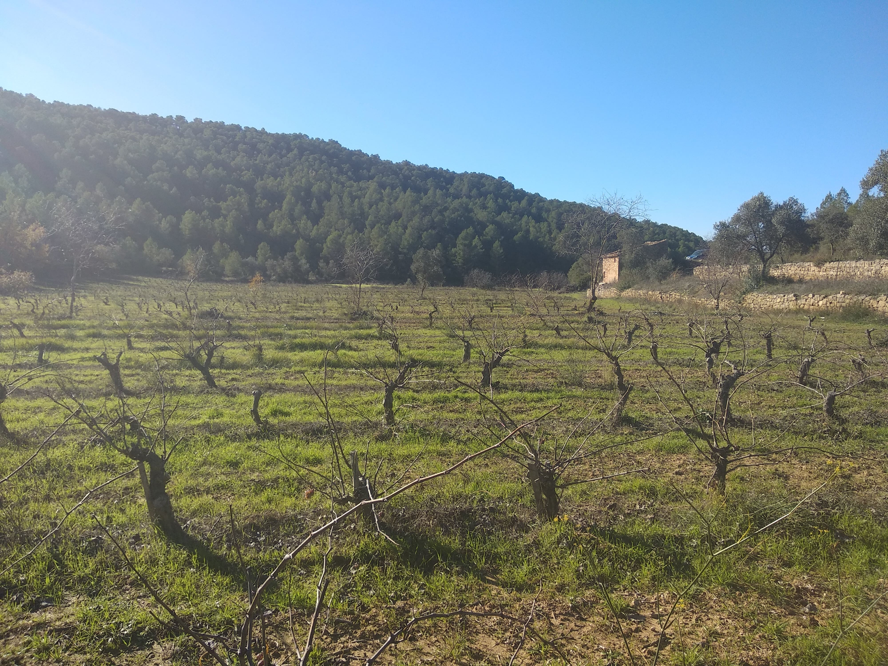

No direm que és un vi ecològic, orgànic, natural, biodinàmic, de mínima intervenció, no clarificat,sense filtrar, sense sulfits afegits... direm que és un Dallonses.
Dallonses recupera patrimoni vinícola, un projecte que ressuscita la història del vi a la Terra Alta. Recuperant unes vinyes velles que estaven condemnades a la desaparició han contribuït a l'elaboració del seu vi més selecte, 100% Macabeu.
Són uns vins de petita producció i de proximitat, allò que costa de trobar, uns vins singulars i curiosos a favor del paisatge, que el conserva i que el protegeix d'amenaces com els incendis.
Casa nostre es situa al sud-est de Catalunya, a la frontera amb Aragó, custodiada pel Parc Natural dels Ports i el riu Ebre a uns 500 metres sobre el nivell del mar amb un clima típicament mediterrani i predomini de dos vents el Cerc (de l'interior), i el Garbí, (del mar).
La diversitat dels sols calcaris i pobres en matèria orgànica i el paisatge, turons, valls i plans on s'aprofiten les terrasses naturals per a la vinya, fa de casa nostre un paratge d'una bellesa sense precedents i amb el seu microclima de la regió proporciona unes característiques molt peculiars als seus vins.
“Gaudir del vi ha de ser tastar el seu paisatge, per això és important visitar els racons on neix i s'elabora.” , us convidem a l'ombra d'una carrasca o sobre un marge de pedra seca per gaudir l'essència d'aquest paradís rural que és la Terra Alta!!